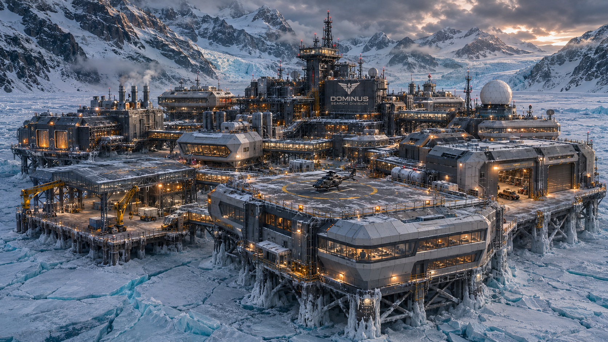
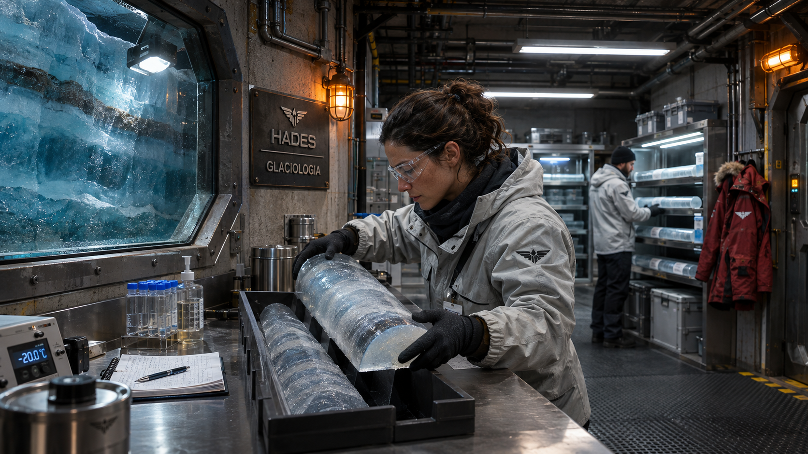

DOM-LOC // 01
Complexos
Hades, seu complexo gêmeo Persephone e a rede de instalações posteriores.
ABRIR TERMINALEsta rede só pode ser acessada pelo terminal liberado após a verificação de credenciais.
Retornar ao terminal de acessoTRANSMISSÃO RECUPERADA // ANT-DOOM-00
O primeiro registro começa na superfície. A origem permanece fora do alcance dos arquivos abertos.
UMA EXPERIÊNCIA CINEMATOGRÁFICA // CLIQUE OU ENTERSINCRONIZANDO TRANSMISSÃO
ESTABELECENDO CONEXÃO COM O ARQUIVO DE ÁUDIO...
ARQUIVO CENTRAL // ACESSO PARCIAL
O arquivo foi aberto. As respostas, não.
PRESSIONE ENTER PARA ACESSAR A REDEUma rede de registros liga as primeiras pesquisas antárticas às instalações que vieram depois. A reconstrução mantém lacunas onde a evidência não permite uma resposta.

Cada terminal abre uma rota própria dentro da rede Dominium. Registros incompletos são identificados como tais; os arquivos não completam sozinhos o que a história ainda não revelou.
Hades, seu complexo gêmeo Persephone e a rede de instalações posteriores.
ABRIR TERMINAL
Amostra DOOM, registros dos agentes Rei e Rainha e estágios visuais recuperados.
ABRIR TERMINAL.jpeg)
Pesquisadores, segurança e identidades que aparecem nos registros cruzados.
ABRIR TERMINAL
Marcos datados, eventos sem data segura e páginas atribuídas ao diário de Maverick.
ABRIR TERMINALEste é um universo ficcional. A interface organiza a lore fornecida para a obra; lacunas estão marcadas e não devem ser lidas como informação científica ou histórica do mundo real.